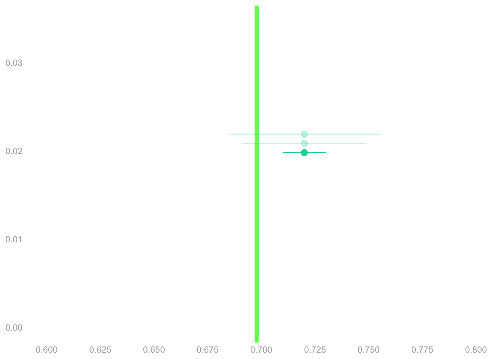
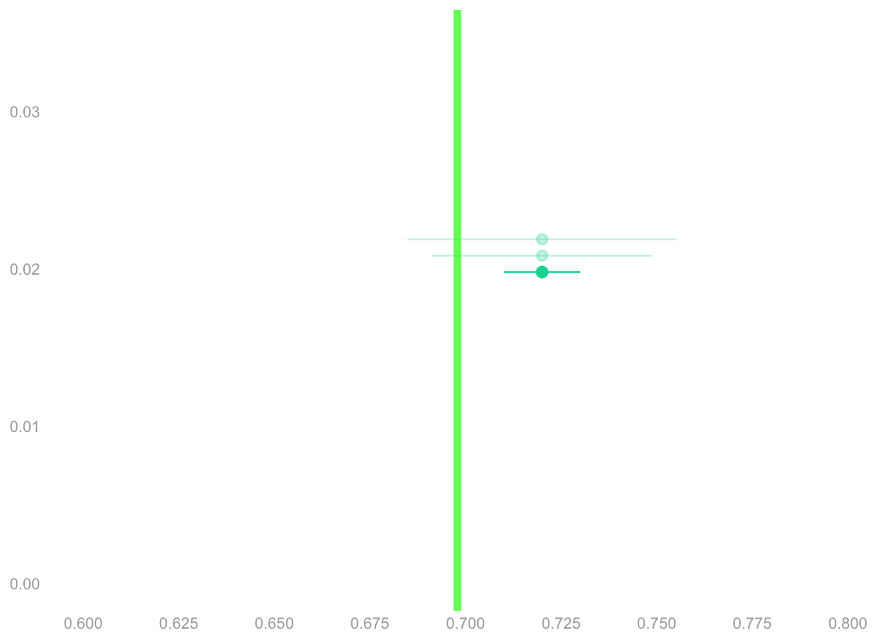

\[ \begin{array}{r|rrrr|r} i & 1 & 2 & \dots & 625 & \bar{Y}_{625} \\ Y_i & 1 & 1 & \dots & 0 & 0.72 \\ \end{array} \]
\[ \begin{array}{r|rrrrrr|r} j & 1 & 2 & 3 & 4 & \dots & 7.23M & \bar{y}_{7.23M} \\ y_{j} & 1 & 1 & 1 & 0 & \dots & 1 & 0.70 \\ \end{array} \]
When the election occurs, we get to see who turns out to vote. 5.05M people, or roughly 70% of registered voters, actually vote. You—and future employers—can see how well you did. And how well everybody else did.
Your interval missed the target. It doesn’t contain the turnout proportion. Your point estimate is only off by 2%. But you overstated your precision. Now you’re kicking yourself. You’d briefly considered saying ± 3% or ± 4%. That would’ve done it. But that didn’t sound as good, so you went for ± 1%.
You hope you’re not the only one who missed. So you check out the competition.